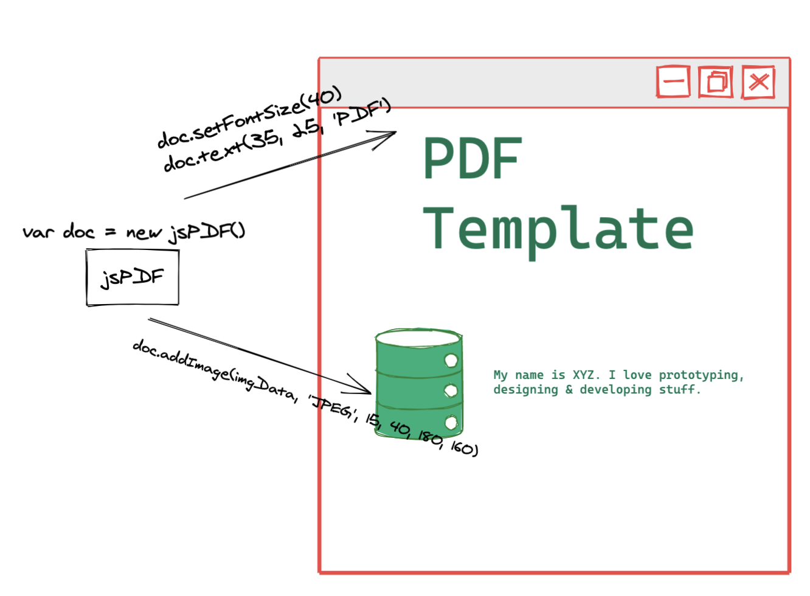

HTML Convert to PDF Summary A recent requirement, HTML convert to PDF, FE is reponse for the whole process implement.
There are two methods to achieve this task after searching through the web:
- Manually write PDF content , jsPDF supports text picture writing and then generate PDF directly, which can be combined with antoTable for easier presentation of tables
- Using the html2pdf library, the implementation mechanism
DOM => IMAGE => PDF
The first method:

The first method uses a native-like writing style, requiring various properties such as text properties and location to be equivalent to writing a document by hand.
Pros: Documents are more readable, appropriately sized, and controlled
Cons: Layout restrictions, computational height, heavy workload
For our actual situation, we are going to print a specific page, but at the same time add some content that will only be displayed in PDF, in fact, the equivalent of a newly written page dedicated to printing, printing content including chart and some complex typographical content. Base on these two points, the first method is abandoned.
The process of implementing the second method:
- We use reactjs, so we've written a new component that loads when we click Print Button, set the PDF to invisible
The html2pdf library is called at the end of the page dom rendering, and the call is similar
html2pdf().set(option).from(element).save()

| Pros: | Cons: |
|---|---|
| The layout is more casual, depending on the layout of the HTML Support complex graphics such as tablet, chart, etc., | Browser render,and the progress relies heavily on the computer configuration Canvas rendering speed limit File size is limited and cannot be compressed Text is not optional and readability is limited |
Here let's look at the problems and solutions that arise after use:
- Our tables are too long and there are a lot of columnes, which requires very wide page support, and finally we use custom page width
- PAGE-BREAK. Although css-page-break is supported, when it comes to table, it is disconnected directly from tr, and the next page makes it impossible to correspond to the contents of each column. So here you need to deal with it yourself with js. Idea: Calculate how many rows table can put on the current page, then add a tr on the edge line, put the thead content in, and add the break-before class to the tr so that you can paging and thead can continue to use it on the next page
Paging: This can be used at the end to write page numbers to each page using setFont
xxxxxxxxxxworker.get('pdf').then(pdf=>{const totalPage = pdf.internal.getNumberOfPages();for(let j=1; j<totalPage; j++){pdf.setPage(j);pdf.setFontSize(20);pdf.text(`page ${j}`)}})
Canvas exceeds the limit because the mechanism of this plug-in is to draw the page first with canvas, so canvas will limit the use of this plug-in, canvas has a maximum pixel limit, once beyond this threshold, there will be blank pages. This problem often occurs in more than 15 pages or so, so the problem is serious. At present can find the way is to page to render, that is, the original one whole page into several pieces of printing.
xxxxxxxxxxConst pages = [] / / chunked html listlet worker = html2pdf().set(option).from(pages[0]).toPdf()for(let i=1; i< pages.length; i++){worker = worder.get('pdf').then(pdf=>{pdf.addPage()}).from(pages[i]).toContainer().toCanvas().toPdf()}
There are still two issue to use this scheme:
xxxxxxxxxx1. Rendering time is too long, about twenty pages to two or three minutes, which may be related to pdf to repeat canvasWorkaround: Minimize the number of renderings of canvas;break table data into small enough group, ensure every group data is just fit for one page. That's lead to table row limitation, if its text wrap in result height changing, group data table will overflow current page.2. Inside the small pieces, the size of the canvas size will still appear blank pagesSolution: Refine to control the size of about 10 pages rendered by canvas at a time

After through this item, It feels like that this PDF is indeed handed over to the back end is more reliable, after all, the front end limit is really a lot.